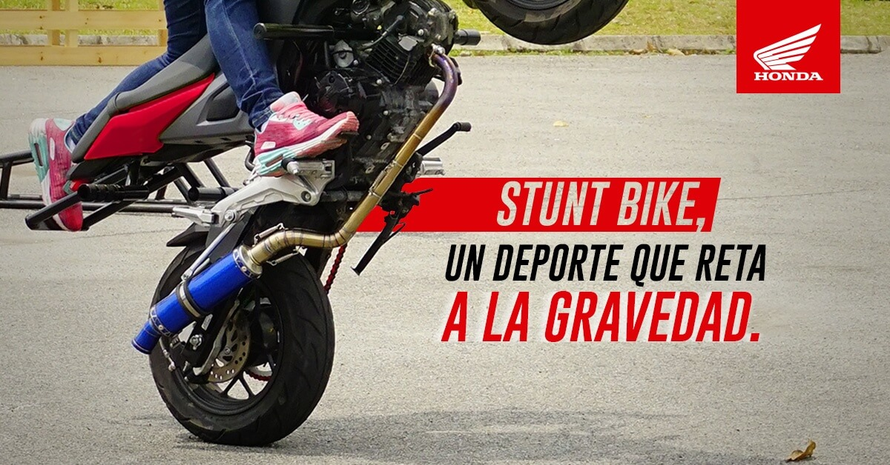
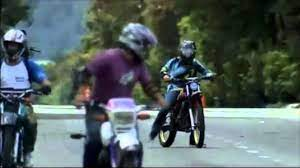
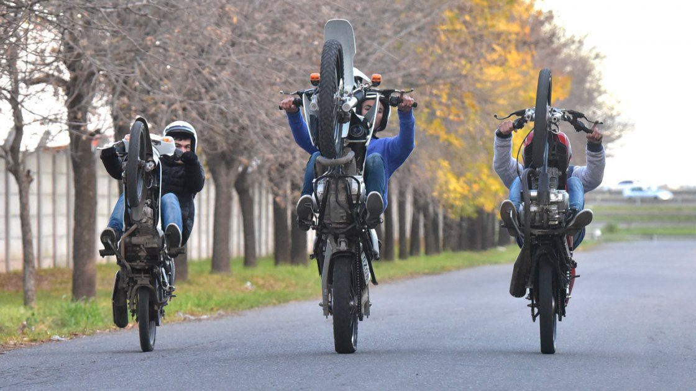
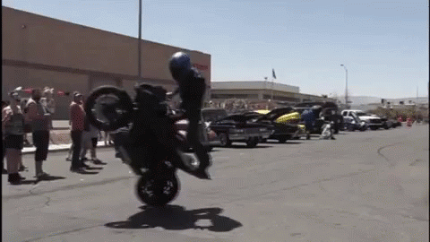
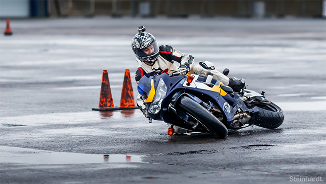

Bienvenid@s
Stunt Bike: El arte de la acrobacia
Stunt Bike suena un poco raro, esta es una disciplina que para nada es reciente en nuestro país. De hecho, Colombia tiene grandes representantes en este deporte, que tampoco es tan novedoso: ya tiene medio siglo de existencia. Entendiendo Stunt como doble, y Bike como motocicleta, el concepto se aclara: son los que hacen acrobacias a bordo de un automotor de dos llantas.
¿Qué maniobras se realizan? El límite es la imaginación: muchos se deciden por maravillar a la gente en el aire , y otros, en tierra. Algunos vuelan por los aires, o intercambian motos con un compañero a gran altura. Los osados se paran en su moto a 200 kms/hora, otros avanzan 500 kilómetros en una sola llanta, como el japonés Masaru Abe.
 Youtube y instagram da fe de la variedad y temeridad de las acrobacias de Tyrone Evans, Jordi Tarrés o la tetracampeona Kiara Fontanesi. ¿Cómo se hace el Stunt Bike? Lo primero es decidirse. Lo segundo, hacerse de una moto adecuada. Puedes empezar con una máquina de al menos 200 cc. Seguido, deberás comprar un excelente equipo de protección: un buen casco, rodilleras, coderas, guantes, lentes y ropa de cuero ajustada. Porque este deporte incluye caídas. y muchas. Te aseguramos que la sensación de volar, retar la gravedad y al viento, no se compara con nada en la vida.
 ¿Te interesa aprender Stunt Bike? En Colombia ya hay atletas practicándolo y nutridos equipos en Cali, Puerto tejadad y en Medellín.
¡No esperes más y déjate llevar por la adrenalina de este deporte!